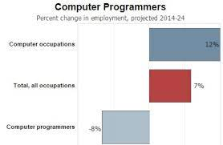

Computer programmer

Minimum degree required: Bachelor's
Years of experience required: 0
Good fit for:-
- Professionals with computer and troubleshooting knowledge
- Detail-oriented people with strong concentration skills
- Analytical problem-solvers
STATISTICAL OUTLOOK for Computer programmer:-
